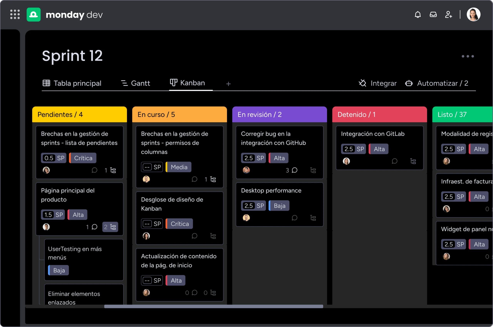

hola, soy
Martin
Baigorria
Desarrollador de Software
📍 Cordoba, Argentina
"No me detengo hasta que la última línea de código y el último píxel encajen a la perfección. Transformo ideas abstractas en productos digitales precisos, funcionales y atractivos."
Sobre mi
¡Hola! Soy Martín Baigorria, estudiante de la Tecnicatura en Desarrollo de Aplicaciones Multiplataforma en la Universidad Nacional de Río Tercero y apasionado por la creación de software. Resido en Córdoba, Argentina. Mi enfoque combina diseño visual con desarrollo lógico y estructurado. Soy observador, organizado y analítico, siempre enfocado en resolver problemas a fondo y crear software de calidad. Me motiva el trabajo en equipo y el aprendizaje continuo. Fuera del teclado, la música y el fútbol son mis grandes pasiones — dos disciplinas que también enseñan ritmo, colaboración y estrategia.
Lo que construí
Proyectos

TaskFlow
Aplicación de gestión de tareas multiplataforma con autenticación, tableros Kanban y sincronización en tiempo real.
TaskFlow
Aplicación de gestión de tareas multiplataforma con autenticación, tableros Kanban y sincronización en tiempo real.
Certificaciones y Logros
2024
Google Cloud
2024
Meta
2023
2023
Cisco
2023
Oracle
2022
freeCodeCamp
LO QUE DICEN
Testimonios y Recomendaciones
Opiniones de personas con las que he trabajado y colaborado.
Laura González
Carlos Mendez
Ana Rodriguez
CONSTRUYAMOS LO QUE VIENE
¿Tenés un proyecto en mente? ¿Querés colaborar o simplemente charlar de tecnología?